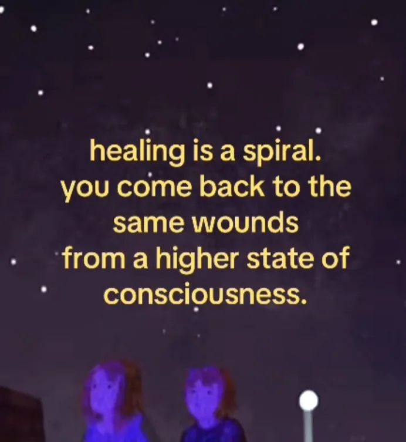
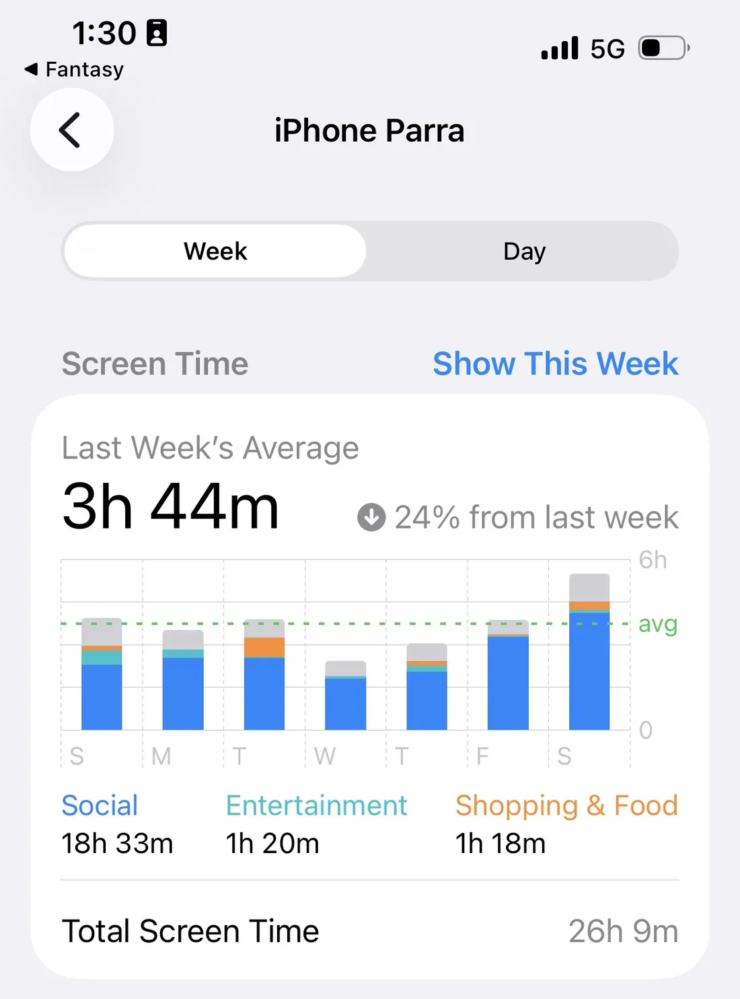
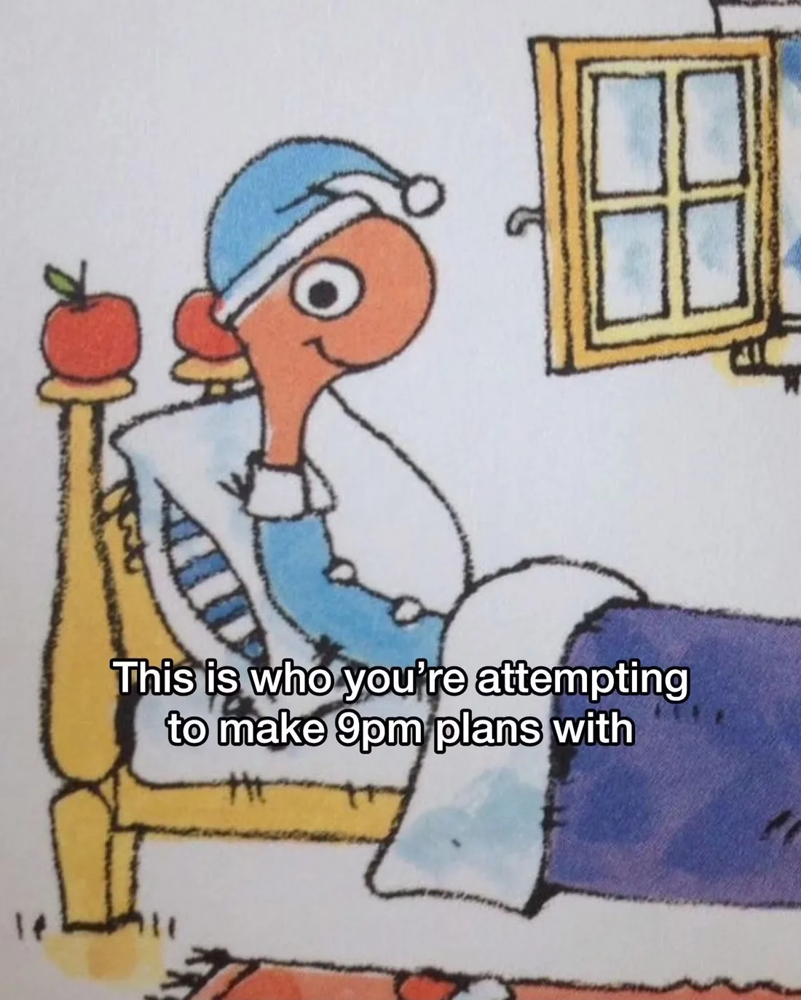
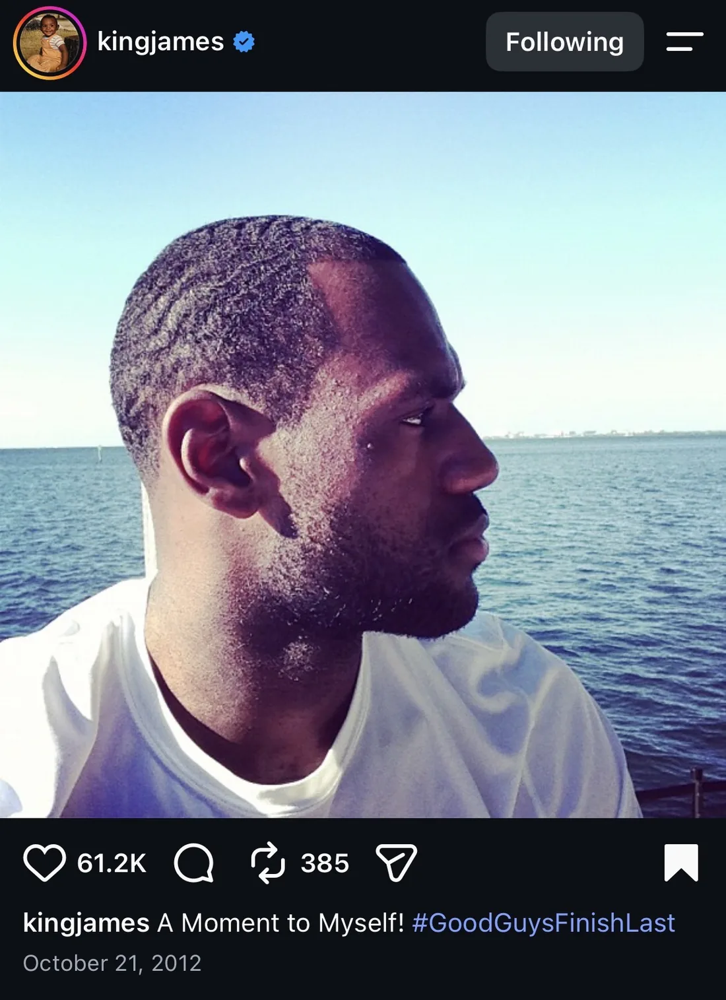
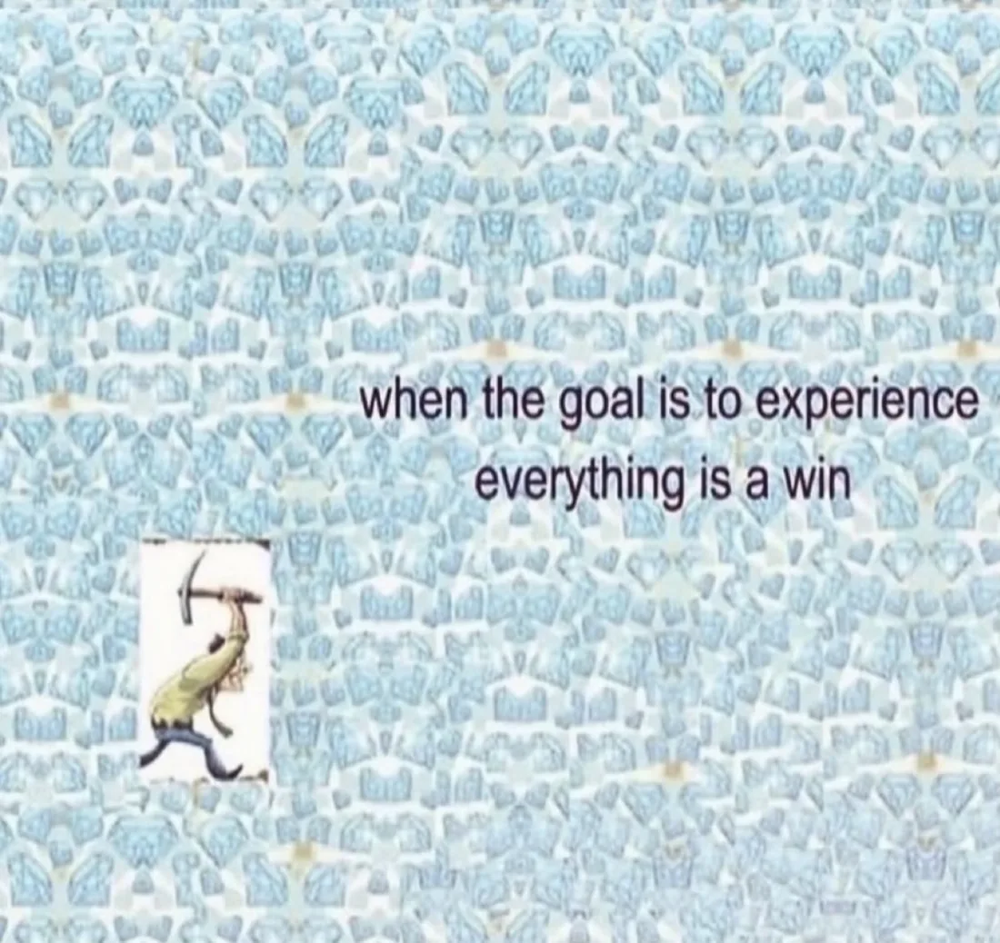

I'm trying to stay focused on my goals while keeping myself emotionally stable.
Estoy tratando de mantenerme enfocado en mis metas y, al mismo tiempo, estable emocionalmente.
It's been a while since I last took the time to write about myself. A lot has changed since then. It feels like it's been ages, but it's only been a month and a half. I've made some of the changes I was hoping to make, and things have turned out better than I expected.
Ya tenía rato que no me daba el tiempo de escribir sobre mí. Han cambiado muchas cosas desde entonces. Se siente como si hubiera pasado una eternidad, pero apenas va un mes y medio. Hice algunos de los cambios que quería hacer, y las cosas salieron mejor de lo que esperaba.
Days are going by faster now. I've met new people, started a new job, moved in with my grandma, and changed my entire daily routine.
Los días se me están pasando más rápido. Conocí gente nueva, empecé un trabajo nuevo, me fui a vivir con mi abuela y cambié toda mi rutina diaria.
For the first time in a while, I feel like my future looks brighter, even if I'm still not where I want to be.
Por primera vez en un buen tiempo, siento que mi futuro se ve más bonito, aunque todavía no estoy donde quiero estar.
New chapter: my job, goals and expectations
Nuevo capítulo: mi trabajo, metas y expectativas
I'll be honest, I don't really like my job that much. It's something I've done before, surrounded by the same type of people I've worked with in the past.
Voy a ser honesto, la verdad no me gusta tanto mi trabajo. Es algo que ya había hecho antes, rodeado del mismo tipo de gente con la que ya había trabajado.
Three months ago, I would've told myself I wanted to do something completely different. But now, I really appreciate the opportunity to work in a new place, even if I'm doing almost the same thing as before.
Hace tres meses me hubiera dicho a mí mismo que quería hacer algo totalmente diferente. Pero ahora de verdad aprecio la oportunidad de trabajar en un lugar nuevo, aunque esté haciendo casi lo mismo que antes.
It was surprisingly easy to adapt from the beginning. I think I approached this job with a different perspective, and that made all the difference. Even though I had a pretty negative experience with this type of work before, coming back to it has felt like starting something new.
Me adapté sorprendentemente rápido desde el principio. Creo que llegué a este trabajo con otra perspectiva, y eso cambió todo. Aunque ya había tenido una experiencia bastante negativa con este tipo de trabajo, regresar se ha sentido como empezar algo nuevo.
It's like returning to a place you already know, but as a completely different person.
Es como regresar a un lugar que ya conoces, pero siendo una persona completamente diferente.

I feel more mature and more capable of doing better than I did last time. And the best part? I feel less pressure than before.
Me siento más maduro y más capaz de hacerlo mejor que la última vez. ¿Y lo mejor? Siento menos presión que antes.
No one expects much from me here. I can mess something up, and everyone will probably be like, "Oh, it's fine, he's new." Lol.
Aquí nadie espera mucho de mí. Puedo regarla en algo y seguro todos van a decir: "Ah, no pasa nada, es nuevo." Jaja.
I don't have to prove anything to anyone. Not what I'm capable of, not my previous experience. I don't care as much about my professional image or what I'm supposed to represent.
No le tengo que demostrar nada a nadie. Ni de lo que soy capaz, ni mi experiencia de antes. Ya no me importa tanto mi imagen profesional ni lo que se supone que debo representar.
And honestly, it's nice not having a supervisor or leadership role for once. Whatever amount of work or effort I put in now is because I genuinely feel like it, not because I feel responsible for everyone else.
Y la neta, está bien no tener un puesto de supervisor o de líder por una vez. El trabajo o el esfuerzo que le meto ahora es porque de verdad me nace, no porque me sienta responsable de todos los demás.
It's been surprisingly relaxing so far. And somehow, that's made my most hated type of job, call centers, a little more enjoyable.
Hasta ahorita ha sido sorprendentemente relajado. Y de alguna forma, eso ha hecho que el tipo de trabajo que más odio, los call centers, sea un poquito más disfrutable.
Outside of work
Fuera del trabajo
But enough job talk. Let's talk about what's been keeping me busy outside of work.
Pero ya basta de hablar del trabajo. Hablemos de lo que me ha mantenido ocupado fuera de ahí.
I've been trying to spend less time on my phone, and I've set some limits to avoid doomscrolling. My biggest flex right now is how much my average screen time has dropped.
He estado tratando de usar menos el celular, y me puse algunos límites para no quedarme haciendo doomscrolling. Mi mayor flex ahorita es cuánto me ha bajado el tiempo de pantalla promedio.

Work keeps me busy, but when I get home, I still feel the need to catch up on everything. So I started looking for something that could keep me occupied while also being something I genuinely enjoy.
El trabajo me mantiene ocupado, pero cuando llego a la casa todavía siento la necesidad de ponerme al día con todo. Así que empecé a buscar algo que me mantuviera ocupado y que al mismo tiempo de verdad me gustara.
And that something is football.
Y ese algo es el football.
Thank God it's football season, because it's been my main hobby this past month. I manage two fantasy football leagues (here's the link in case you'd like to check them out), so I've been busy checking stats, keeping up with players, and watching as many games as possible.
Gracias a Dios ya es temporada de football, porque ha sido mi hobby principal este último mes. Manejo dos ligas de fantasy football (aquí está el link por si las quieres checar), así que he andado ocupado revisando stats, siguiendo a los jugadores y viendo todos los partidos que puedo.
I'd also say that's why I've been eating so much lately. I hate watching a game without snacks. It's part of the experience, okay?
También diría que por eso he estado comiendo tanto últimamente. Odio ver un partido sin botanas. Es parte de la experiencia, ¿okay?
I'm not drinking as much, though, since I have to get up early for work the next day. Priorities, I guess.
Eso sí, no estoy tomando tanto, porque me tengo que levantar temprano para trabajar al día siguiente. Prioridades, supongo.

Wrapping up
Para cerrar
Anyway, it's been a fun month. I wish I had more time to write and stay creative, but I'm pretty sure I'll find the time eventually.
En fin, ha sido un mes divertido. Me gustaría tener más tiempo para escribir y seguir siendo creativo, pero estoy seguro de que tarde o temprano voy a encontrar el tiempo.

I feel like I'm entering a new phase of my life, and it's been a bit of a rollercoaster. But this time, I already know how big the fall can be, and I'm not as scared of what's coming next. So I might as well enjoy the ride.
Siento que estoy entrando a una nueva etapa de mi vida, y ha sido como una montaña rusa. Pero esta vez ya sé qué tan grande puede ser la caída, y ya no me da tanto miedo lo que viene. Así que mejor disfruto el viaje.
I'm not on the rollercoaster I'd prefer to be on just yet, but I'm getting there.
Todavía no estoy en la montaña rusa en la que me gustaría estar, pero ahí voy.
I don't know who's been reading my posts, but I hope this resonates with anyone who might be feeling a little lost or unsure about where they're headed in life. It's okay not to be where you want to be yet. Take the time to figure yourself out, appreciate where you are, and enjoy the ride you're on.
No sé quién ha estado leyendo mis posts, pero ojalá esto le llegue a cualquiera que se sienta un poco perdido o con dudas de hacia dónde va en la vida. Está bien no estar todavía donde quieres estar. Date el tiempo de conocerte, aprecia dónde estás y disfruta el viaje en el que vas.

We'll see where it takes us.
Ya veremos a dónde nos lleva.
If you missed the first part, you can read it here.
Si te perdiste la primera parte, la puedes leer aquí.
Say something back
thoughts, opinions, recommendations, whatever comes to mind.